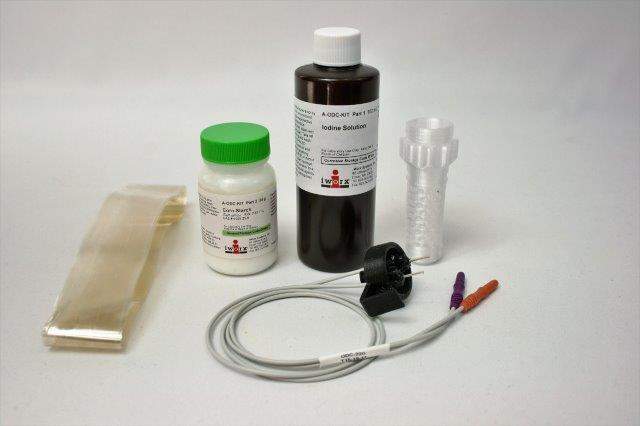

Osmosis Chamber
This is an osmosis chamber I designed to work with dialysis tubing. The container has hexagonal holes all around it to let what it is poured around the tubing diffuse into the chamber. The conductivity of the solution in the central chamber starts as less conductive and increases as the solution around the chamber is drawn in. This change is measured with two electrodes in the cap that connect to a data acquisition system. This allows students to measure osmosis and with the use of iodine they are able to see the exchange take place.
One challenge with this design was designing a good strain relief for the wires. I ended up designing some pins that could be snapped in to restrict the size of the opening and lock onto the wires. This allowed me to keep the height of the lid small and worked surprisingly well. The chamber had a pressure port to measure the pressure differential created during osmosis. This meant I needed the chamber to be airtight which added another element of complexity. I found having a thick layer height configured for the 3D printer resulted in leakage through the material even after increasing the thickness quite a bit. Setting the height as low as practically possible provided an optimal seal through the plastic itself.